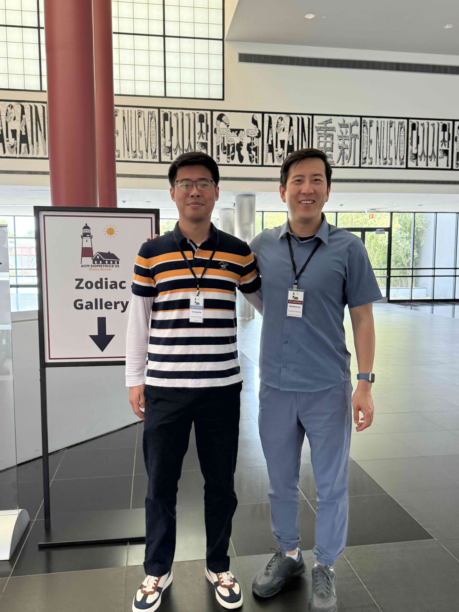
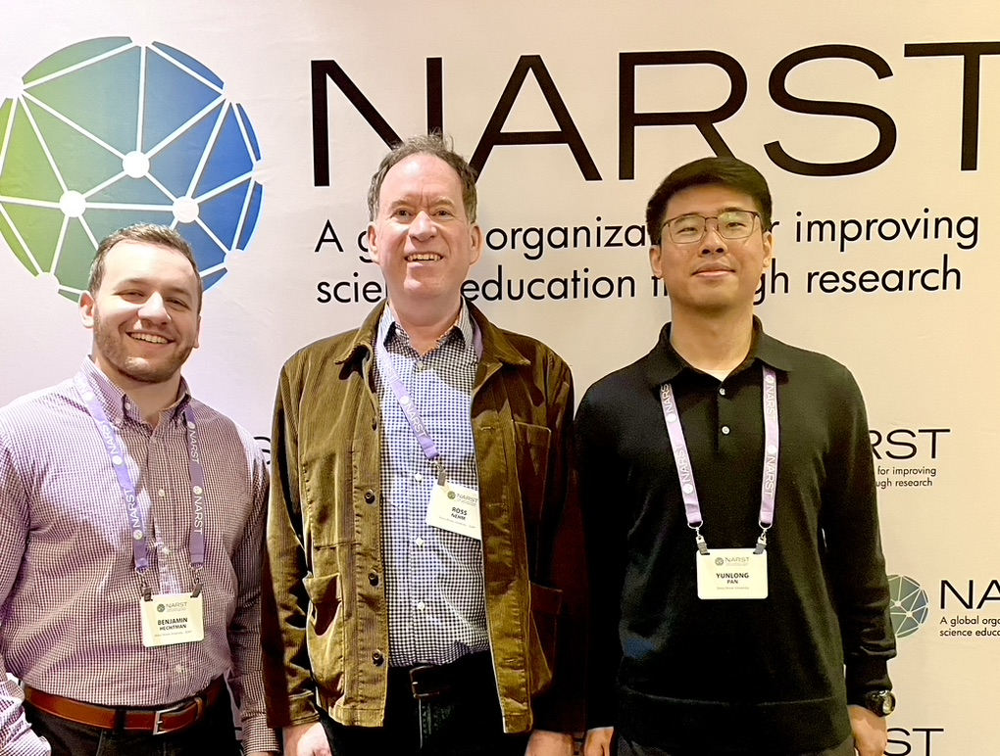
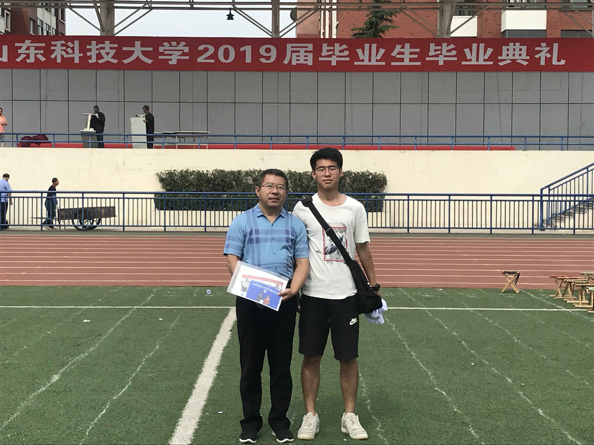

Summary
I'm driven by the challenge of uncovering patterns in complex data and transforming them into actionable insights. I enjoy solving real-world problems by leveraging data-driven approaches that create meaningful impact and informed decisions.
- Explore responsible and ethical AI usage.
- Democratize deep learning for public benefit.
- Maximize GPU performance to drive breakthrough discoveries.
- Unite diverse researchers to spark transformative ideas.
Experience
Research Assistant · Brookhaven National Lab
Research Assistant · Stony Brook University
Teaching Assistant · Stony Brook University
Snapshot
- Location: Brookhaven, New York
- Email: yunlong.pan@stonybrook.edu
- GitHub: github.com/yl1127
Highlighted Projects
HybridSCM
Led the development of a hybrid climate-modeling workflow combining E3SM-SCM simulations with neural surrogate models for fast parameter sensitivity analysis and uncertainty quantification.
Designed automated pipelines for experiment sampling, batch simulation, output processing, and visualization, reducing the cost of exploring large climate parameter spaces.
NeuralCora: a framework for Deep Learning research on Coastal Ocean Reanalysis
NeuralCora aims to bring station-level forecasting—traditionally reliant on expensive observation devices—to broader coastal communities. As the Student Research Lead, I oversee model design, data integration, and validation efforts to ensure accessible, accurate, and cost-effective climate insights powered by AI. View Code on GitHub
Large Language Model and Traditional Machine Learning Scoring of Evolutionary Explanations: Benefits and Drawbacks
Co-researched with Prof Nehm to compare large language models and traditional machine-learning methods for automated scoring of students' evolutionary explanations. Contributed to prompt design, data processing, and statistical evaluation, revealing trade-offs between accuracy, efficiency, and reliability in AI-based assessment. Read Paper
Skills
Research Computing
Python · R · SQL · SAS · NumPy · pandas
Machine Learning
PyTorch · scikit-learn · Ollama · Hugging Face
Scientific Workflows
E3SM · scmlib · SciPy · Plotly · Matplotlib · xarray
Deployment & Tools
GitHub · Docker · AWS · Azure · Google Cloud · n8n
Education
Stony Brook University · Doctor of Philosophy(TBD)
Stony Brook University · Master of Science
Shandong University of Science and Technology · Bachelor of Science
Memories



AI Learning & Practice
A running record of my applied AI learning, combining structured short courses with hands-on local AI workflow playbooks.